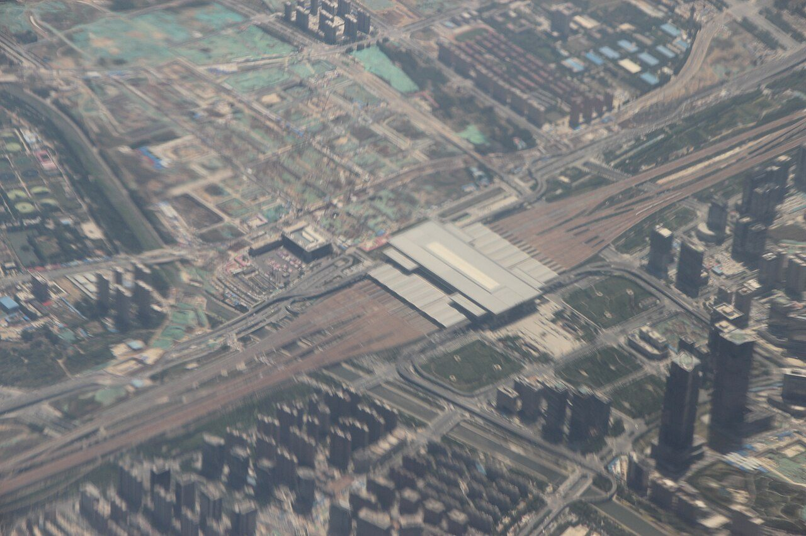
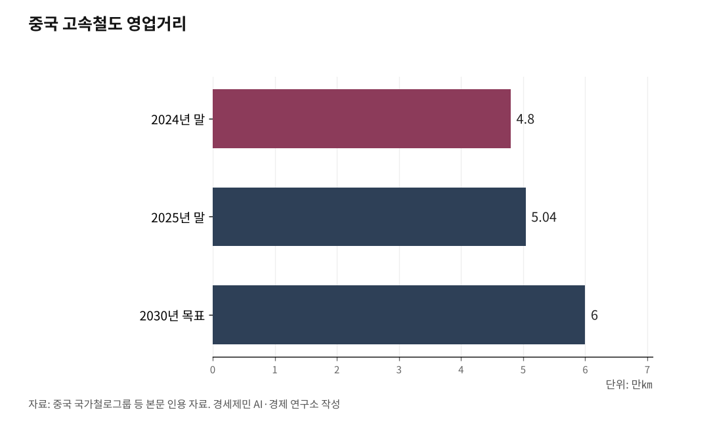

[중국철도①] 중국 철도, 골격은 8종8횡 하나… 성마다 격자·미자·방사·환선
2016년 확정한 국가 골격 위에 성마다 제 격자를 얹었다
국가 간선이 교차하는 매듭에서 미자형 거점이 태어났다
정저우·시안·우한 미자형 허브 경쟁, 한국 5극3특에 주는 함의
중국 철도망은 골격이 하나다. 세로 8개, 가로 8개 간선 회랑으로 짜인 8종8횡(八縱八橫) 격자다.

34개 성급 행정구의 철도망은 제각각으로 보이지만, 그 다양함은 무질서가 아니다. 국가가 골격 하나를 깔고, 그 위에 지형과 위치에 맞는 그림을 얹은 결과다.
2016년 확정한 국가 골격
8종8횡은 2016년 7월 국가발전개혁위원회와 교통운수부, 중국철로총공사가 국무원 비준을 거쳐 중장기철도망규획을 발표하며 기존 4종4횡을 넓힌 뼈대다. 2021년 2월 중공중앙과 국무원이 국가종합입체교통망규획강요를 펴내며 국가 골격으로 확정했다.
여덟 종선은 연해와 징후, 징강타이 등으로, 여덟 횡선은 쑤이만과 징란, 육교 등으로 전국을 격자처럼 덮는다. 목표는 국가 고속철도망을 2035년 5만6000㎞(2021년 기준)로 늘리는 것이다.
평지는 격자, 산은 방사, 섬은 환선
성마다 망의 모양을 가른 것은 지형이다. 화북과 화동, 화남의 평지에서는 종횡 격자가 바둑판처럼 또렷하다. 산둥은 8종6횡, 장쑤는 6종6횡으로 촘촘하다.
지형이 끼어들면 격자에 고리가 붙는다. 베이징을 둘러싼 허베이는 환수도선을 더해 5종4횡1환이 됐고, 섬인 하이난은 섬을 한 바퀴 도는 환도(環島) 고속철이 골격이다.
산악과 고원에서는 격자를 포기하고 거점 한 곳에 노선을 모아 사방으로 내보내는 방사형을 택했다. 쓰촨은 청두 분지에 노선을 집중한 단핵 방사형이고, 시짱은 라싸를 중심으로 다섯 방향에 진장(進藏) 통로를 잇는다.
미자형 거점은 교차점에서 태어났다
내륙 거점도시가 미자형이 된 까닭은 국가 간선의 교차로 설명된다. 쌀 미(米) 자처럼 한 역에서 여덟 방향으로 노선이 뻗는 구조다.
정저우에서는 베이징과 광저우를 잇는 종축과 롄윈강·우루무치를 잇는 육교 횡축이 십자로 만난다. 우한에서는 그 종축에 상하이·청두를 잇는 연강 횡축이 겹친다. 국가가 깔아둔 그물망의 매듭이 굵은 곳에서 성도가 미자형으로 부풀었다.
정저우가 전국에서 처음 미자형을 완성했고, 시안이 시안동역·시안북역을 남북 쌍허브로 삼아 세 번째 허브로 올라섰다. 우한은 12개 방향의 초미자형(超米字形)으로 한발 더 나아간다.
시안-스옌 개통, 푸인 통도를 채운다
미자형 경쟁의 최전선이 시안이다. 신설 시안-스옌(西十) 고속철도 255.7㎞가 친링(秦嶺)산맥을 뚫고 2026년 6월30일 개통했다. 새로 문을 연 시안동역을 기점으로 시안-우한 고속철도 회랑이 전 구간 이어졌다.
다리와 터널이 구간의 95%를 차지한다. 그 가운데 마바이산터널은 길이 22.9㎞로, 관통된 것으로는 중국에서 가장 긴 고속철도 터널이다.
개통으로 5시간 안팎 걸리던 시안-우한이 최단 2시간 41분(우한 한커우역 기준)으로 좁혀졌다. 정저우를 크게 돌던 1059㎞ 우회도 716㎞로 343㎞ 짧아졌다.
동남 연해 푸저우에서 서북 인촨에 이르는 푸인(福銀) 통도도 이 마지막 토막으로 완성됐다. 간선 격자의 빈칸 하나를 메우려 산맥을 뚫은 이유가 여기 있다.
81.5% 완성, 세계 최대 5만㎞
국가 골격은 빠르게 채워진다. 8종8횡 주통도는 총연장 약 4만5000㎞로, 2025년 약 81.5%가 건설·개통됐다.
전국 고속철 영업거리는 2025년 말 5만400㎞를 넘어섰다(2024년 말 4만8000㎞). 세계 고속철도의 약 70%가 중국 한 나라에 있다. 중국은 2026년 한 해에만 신선 2000㎞ 이상을 놓고, 2030년 6만㎞로 늘려 8종8횡을 성망(成網)한다는 구상이다.
전기로 달려 전력망 따라 깨끗해진다
이 격자가 뻗을수록 녹색교통 효과도 커진다. 고속철도는 전기로 달려 화석연료를 직접 태우지 않는다. 중국 철도 전기화율은 2012년 52.3%에서 2023년 말 73.8%로 올랐다.
관건은 그 전기가 어디서 오느냐다. 2025년 풍력과 태양광 설비가 사상 처음 화력을 넘어서며 재생에너지 설비가 전체의 약 60%에 이르렀다.
전력망이 푸를수록 철도는 가만히 있어도 함께 푸르러진다. 화석연료를 직접 태우는 자동차나 항공이 누리지 못하는 이점이다.
한국 5극3특에 주는 함의
중국 고속철 건설의 핵심은 노선 숫자가 아니라 거점을 매듭으로 묶는 데 있다. 간선이 한 역에서 만나 여덟 방향으로 갈라지는 미자형 허브가 도시권의 성장 엔진이 된다.
한국이 추진하는 5극3특 국가균형성장 전략도 거점도시를 잇는 광역철도를 핵심 수단으로 삼는다. 대전과 대구, 광주 같은 거점을 간선 고속철과 광역급행, 도시철도가 만나는 환승 결절점으로 키우는 일이 과제다.
중국 미자형이 주는 교훈은 몇 개를 더 놓느냐가 아니라 어디를 매듭으로 삼느냐다.
※ 이 기사는 AI 프로그램 클로드를 활용해 작성했습니다.

참고문헌
· "국가종합입체교통망규획강요(國家綜合立體交通網規劃綱要)", 중공중앙·국무원, 2021.2.24., https://www.gov.cn/gongbao/content/2021/content_5593440.htm
· "중장기철도망규획(中長期鐵路網規劃)", 국가발전개혁위원회·교통운수부·중국철로총공사(국무원 비준), 2016.7.13.
· "China's high-speed rail mileage tops 50,000 km", Xinhua, 2025.12.26., https://english.news.cn/20251226/558786c99de5428b98a84c3ff93300e3/c.html
· "全国铁路营业里程预计达18万公里左右", 중국 국가철도그룹, 2026.1.9., http://www.china-railway.com.cn/xwzx/ywsl/202601/t20260109_151507.html
· "第三个高铁"米字型"枢纽，落定西安", 新浪财经, 2026.4.22., https://finance.sina.com.cn/jjxw/2026-04-22/doc-inhvixkn4446156.shtml
· "西十高铁，开通运营！", 人民网 陕西, 2026.6.30., http://sn.people.com.cn/n2/2026/0630/c186331-41625180.html
· "视频丨西十高铁正式运营 穿行秦岭的西北华中高铁大动脉", 新华网, 2026.6.30., https://www.news.cn/local/20260630/0abb0837ac82405c9c3e25a04d3d7164/c.html
· "全国最长高铁隧道——西十高铁秦岭马白山隧道顺利贯通", 人民网 陕西, 2025.4.23., http://sn.people.com.cn/n2/2025/0423/c226647-41206118.html
· "《山东省综合立体交通网规划纲要（2023-2035年）》发布", 中国铁路网, 2023., https://chnrailway.com/index.php/index/shows?catid=10&id=10540
· "江苏"十四五"铁路发展暨中长期路网布局规划出台", 江苏网信网, 2021.9.28., https://www.jswx.gov.cn/yw/202109/t20210928_2862408.shtml
· "5극3특 균형성장 전략 확정 발표", 대한민국 정책브리핑, 2025.9.30., https://www.korea.kr/news/policyNewsView.do?newsId=156721999
사진 출처
· [대표사진] Gary Todd, "2018 Zhengzhou East Railway Station Aerial View.jpg", 위키미디어 공용, CC0, https://commons.wikimedia.org/wiki/File:2018_Zhengzhou_East_Railway_Station_Aerial_View.jpg
※ 이 기사는 인공지능을 활용해 작성했습니다.
관련기사
- [중국철도②] 중국 철도화물 16억t, 석탄 빼고 다 늘었다
- [중국철도③] 중국-유럽 화물열차, 유라시아를 세 갈래로 관통한다
- [중국철도④] 중국-유럽 화물열차 동부 통로, 올해 44.8% 급성장
- [중국철도⑤] 중국 철도의 두 얼굴, 같은 나라 다른 시스템
저작권자 © AI경세제민 무단전재 및 재배포, AI학습 및 활용 금지